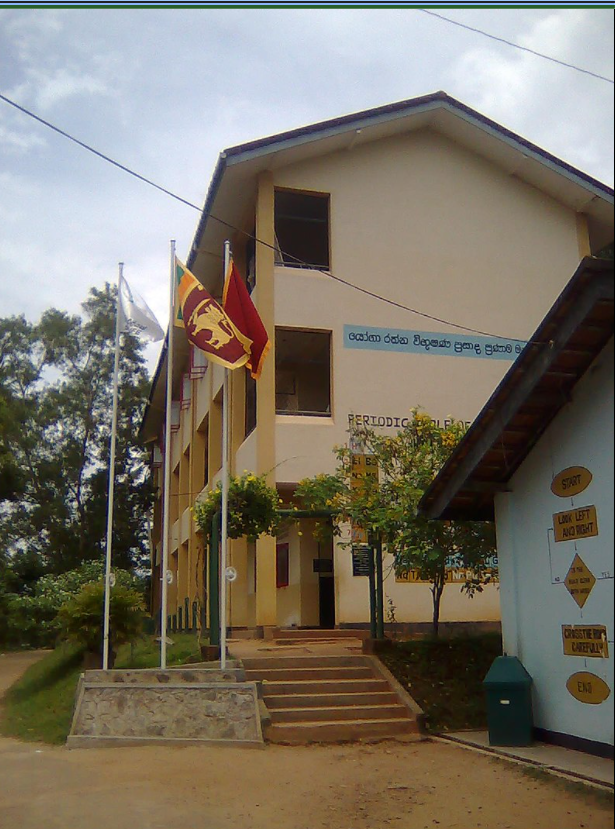
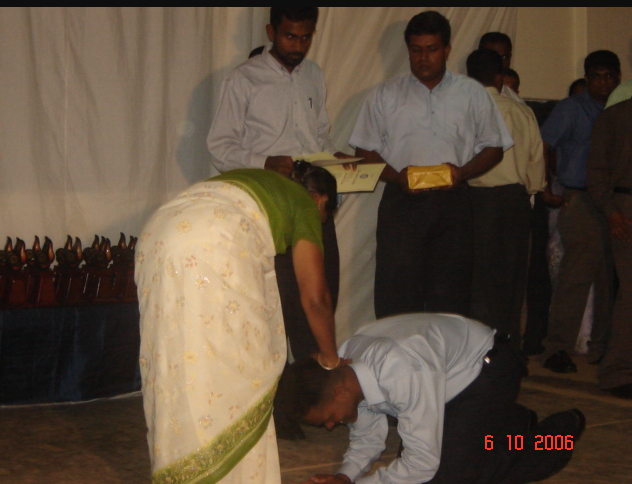
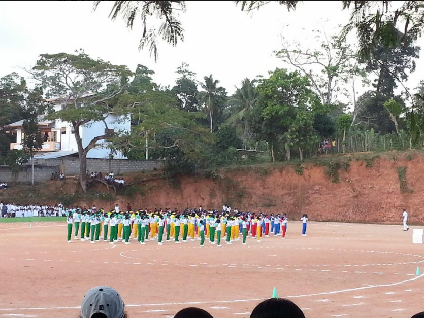

Our school
පාලටුව ගුණරතන මධ්ය මහා විද්යාලය (සාමාන්යයෙන් හදුන්වන නම - ගුණරතන විද්යාලය) ශ්රී ලංකාවේ රජයේ පාසලකි. එය ශ්රී ලංකාවේ මාතර දිස්ත්රික්කයේ පාලටුව ප්රදේශයේ පිහිටා ඇත. උනැල්ල ශ්රී නාගාරාම පුරාණ විහාරස්ථානයේ විහාරාධිපතිව වැඩසිටි ගුණරතන මාහිමියන්ගේ ආදිකතෘත්වයෙන් 1926 වර්ෂයේදී පෞද්ගලික බෞද්ධ පාඨශාලාවක් ලෙස විද්යාලයක් අරඹන ලදී. ගුණරතන විද්යාලය දක්ෂිණ ශ්රී ලංකාවේ දීර්ඝතම ඉතිහාසයක් ඇති පාසල් බෞද්ධ පාසල් වලින් එකකි. මෙම විද්යාලය මේ වන විට රජයේ මෙහෙයවීමට අනුගත පළාත් පාසලක් වන්නේ ය. අකුරැස්ස මාතර මර්ගය අසල පාලටුව නම් ගම්මානය මැද කදු මුදුනක පිහිටා ඇති මෙම විද්යාලය සුන්දර පරිසරයකින් යුක්ත කීර්තිමත් පාසලකි. මෙම විදාලය රජයේ මිශ්ර පාසලක් ලෙස ක්රියාත්මක වේ. ගුණරතන විද්යාලය 1920 බෞද්ධ පුනරුදයත් සමඟ ආරම්භ කරන ලදි. මුලින්ම උපකෘත සිංහල පාසලක් ලෙස ඇරබි මෙම විද්යාලයේ පුරෝගාමීත්වය දරන ලද්දේ උනැල්ල ශ්රී නාගාරාම පුරාණ විහාරස්ථානයේ විහාරාධිපතිව වැඩවිසු ගුණරතන මාහිමියන් විසින්ය. දැනට මෙම විද්යාලයේ සිසුන් 2500 කට අධික ප්රමාණයක් අධ්යාපනය ලබන අතර, ප්රාතමික අංශයේ සිට ද්විතික අංශය දක්වා මෙහිදි අධ්යාපනය හැදෑරීමට අවකාශ තිබේ. පුහුණු පළපුරුදු ගුරුවරුන් 130 කට අධික ප්රමාණයක් දැනට මෙම විද්යාලයේ ශිල්ප ශ්රාස්ත්ර ඉගැන්වීමේ නිරතව සිටී.
1920 දශකයේ ඇති වු බෞද්ධ ප්රබෝධයේ ප්රථිඵලයක් ලෙස පාලටුව ගුණරතන බෞද්ධ විද්යාලයේ මුල් බීජය රෝපනය කරනු ලැබුයේ උනැල්ල ශ්රී නාගාරාම විහාරස්ථානයේ විහාරාධිපතිව වැඩ සිටි අති ගෞරවනීය ඇටැම්පල ගුණරතන මාහිමියන් විසින්ය. උන් වහන්සේ උනැල්ල ගම්මානයේ දායක කාරකාධින්ගේද උදවු ඇතිව 1924 දී පොල් අතු සහ ලී දඩු ගෙනවිත් පාලටුව බෞද්ධෝදය පිරිවෙන ආසන්නයේ පාසලක් ආරම්භ කළා. ඒක කටුමැටි ගසා පොල්අතු සෙවිලි කළ කුඩා මඩුවක් හා සමානයි. ඒකට ඇතුළත් කළ මුල්ම ශිෂ්යියන් කීපදෙනා අතුරින් අත්තුඩාවේ සිරි රාහුල මහ නාහිමි (ගිහි නම දයානන්ද), වත්මන් ජනාධිපති මහින්ද රාජපක්ෂ මැතිතුමාගේ මෑණියන් වන දන්දිනා සමරසිංහ දිසානායක මැතිණිය, සිටියා. මුල්ම ප්රධානාචාර්යවරයා වුණේ ඩබ්ලිව්. එච්. එස්. ජයවර්ධන මහත්මයා. ඒ පාසල අද පාලටුව ගුණරතන මධ්ය මහා විද්යාලය නමින් ප්රදේශයේ කීර්තිමත් අංගසම්පූර්ණ විද්යාලයක් බවට වී තිබේ. මෙම විද්යාලයේ ආරම්භක යුගය ආනන්ද විද්යාලය, නාලන්ද විද්යාලය, රාහුල විද්යාලය, වැනි බෞද්ධ ප්රබෝධයත් සමඟ ඇරබි බෞද්ධ විද්යාල ගනයට අයත් වන අතර එකල ආනන්ද විද්යාලය සමඟ සෘජු සම්බන්දතා පැවති බවටද සාධක තිබේ. මෙම විද්යාලයේ බුදු මැදුර තුල ඇති බුද්ධ ප්රතිමාව එදා ආනන්ද විද්යාලයේ සිට පෙරහැරකින් මෙම විද්යාලයට වඩම්මා ඇති බවට සාධක තිබේ. මෙම විද්යාලය සම්බන්දව එකල , ලංකාවේ සිටි ටිබෙට් ජාතික එස්. මහින්ද හිමිපානන් වහන්සේ පවා කවි ලියා ඇති බවට විද්යාලයීය ඉතිහාසය සාක්ෂි දරයි. ස්වේඡ්ඡාවෙන් ඇරබි මෙම විද්යාලය රජයේ ආධාර ලබන උපකෘත සිංහල පාසලක් ලෙස පවත්වාගෙන යන්නට විය. නොයෙක් දුෂ්කරතා මැද විවිධ විදුහල්පතිවරුන්ගේ නායකත්වය යටතේ පවත්වාගෙන ආ මෙම විද්යාලය 1960 දශකයේදී ශ්රී ලංකා රජයට පවරාගෙන අමාත්යාංශ පාලනයට නතු කරන ලදි. මෙම යුගයේ විදුහල්පති ධූරය හෙබවු අතුරලියේ ඉන්ද්රරතන ස්ථවිරයන් වහන්සේගේ කැපවීම සහ උනන්දුව මත ප්රදේශයේ ද්දුලන පාසලක් බවට පත්වී තිබේ. මෙම කාලයේ මාතර අකුරැස්ස වැනි ඈත ගම්පළාත් වලින් පවා ශිෂ්ය ශීෂ්යාවන් මෙම විද්යාලයට පැමිණි බවට ඉතිහාසය සාක්ෂී දරයි. මෙම කාලයේ විද්යාලයේ සිර මාතර නගරය දක්වා පාසල් බස් සේවයක්ද පැවති බවට සාධක තිබේ. එතැන් පටන් භෞතික සම්පත් වලින් මෙන්ම මානව සම්පත් වලින්ද සීග්රයෙන් පෝෂනය ලැබු මෙම විද්යාලය 1980 දශකයේදී මහ විද්යාලයක තත්වයට උසස් කරන ලදි. පසුබ පර්ෂද මහ විදුහලක් වශයෙන් ද නැවත 1998 වර්ෂයේදී මධ්ය මහා විද්යාලයක් වශයෙන්ද උසස් කරන ලදි. 2000 වර්ෂයේදී විද්යාලයේ ම ආදි සිසුවකු වු යෝගා රත්නවිභූෂණ මහතා විදුහල්පති ධූරය හෙබවු අතර මෙම කාලයේදී විද්යාලයේ මහල් ගොඩනැගිලි ඉදිවෙමින් විද්යාලයේ පරිසරය අලංකාර වෙමින් සංවර්ධනය වන්නට විය. එතැන් පටන් භෞතික සහ මානව සම්පත් සීග්රයෙන් සංවර්ධනය කරමින් ප්රදේශයේ දූ දරුවන්ට සිය අධ්යාපන පිපාසාව සංසිදුවන්නටත් ජාතියට උතුම් සත්පුරුෂ මානව සම්පතක් ගොඩනගන්නටත් විදු මෑණියන් නොසැලී පවතින්නේය. වත්මන් ජනාධිපති මහින්ද රාජපක්ෂ මැතිතුමාගේ උපන් ගම පාලටුව වන අතර එතුමාගේ මෑණියන් අධ්යාපනය ලැබුවේද මෙම ගුණරතන විද්යාලයෙනි. වත්මන් ජනාධිපති මහින්ද රාජපක්ෂ මැතිතුමා 2011 - 03 - 24දින සීය මෑණියන්ගේ සිහිවීම පිණිස දන්දිනා සමරසිංහ දිසානායක ප්රසාද ශාලාව නමින් තෙමහල් ගොඩනැගිල්ලක් ඉදිකර විවෘත කර සිසු අයිතියට පවරා දෙන ලදි.
 ආදි ගුරුවරුන් උපහාර ලබමින්
 (අපේ පාසලේ ක්රීඩා උත්සවය)
 Our school walk

Our musical shows

My Learning web site
{kind=link}